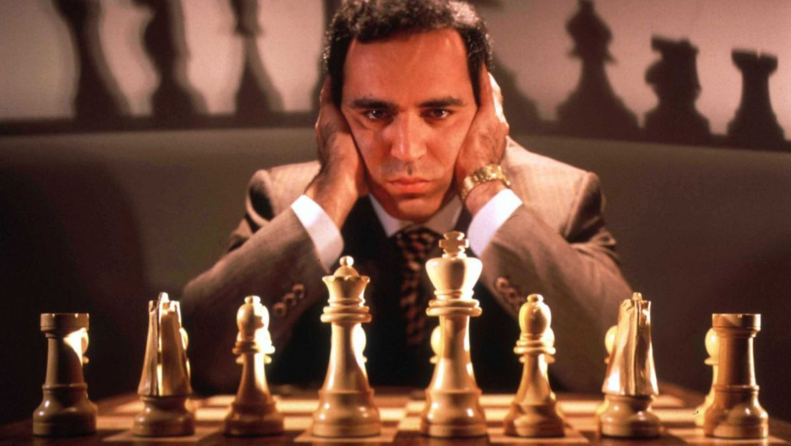
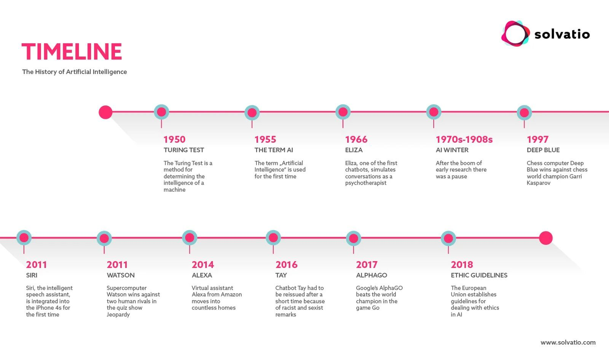
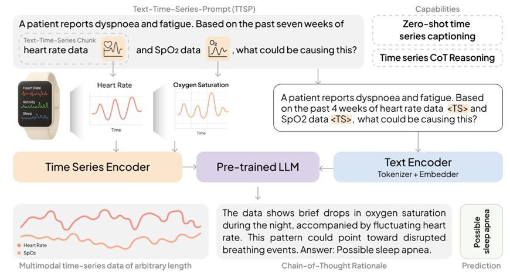

Historia sztucznej inteligencji: od automatów do modeli fundamentalnych
Sztuczna inteligencja. Wyzwania społeczne, kulturowe i prawne
dr Karol Kasprowicz
Katedra Prawa Informatycznego i Zawodów Prawniczych, WPiA UMCS
Plan spotkania
- Prehistoria: mity, automaty, Lullus i Leibniz, maszyna analityczna
- Fundamenty: McCulloch i Pitts (1943), Turing (1950), Dartmouth (1956), perceptron (1958)
- Złote lata (1956–1974) i pierwsza zima AI (1974–1980)
- Systemy ekspertowe (1980–1987), w tym pierwsze systemy prawnicze, i druga zima (1987–1993)
- Przełomy: Deep Blue (1997), ImageNet (2012), AlphaGo i „ruch 37” (2016)
- Transformer (2017), ChatGPT (2022), agenci AI (2024–2026)
- Wnioski dla prawnika
Mapa spotkania

Część I. Prehistoria: marzenie o myślącej maszynie
Mity i opowieści
- Talos: w mitologii greckiej spiżowy olbrzym, który strzegł Krety
- Golem: w legendzie praskiej istota z gliny ożywiona przez rabina; posłuszna, ale groźna, gdy wymknie się spod kontroli
- „R.U.R.” Karla Čapka (1920, prapremiera 1921): w tej sztuce pierwszy raz pojawia się słowo „robot” (od czeskiego robota, praca przymusowa); zaproponował je brat autora, Josef Čapek
- Wspólny motyw: sztuczny sługa, który wyręczy człowieka, i lęk przed utratą nad nim kontroli
Automaty: mechaniczna imitacja życia
- Heron z Aleksandrii (I w.): opisy mechanizmów poruszanych parą, wodą i ciężarkami
- Al-Dżazari (1206): „Księga wiedzy o pomysłowych urządzeniach mechanicznych”, m.in. automaty muzyczne
- Kaczka Vaucansona (pokazana w 1739 r.): mechaniczna kaczka, która „jadła” i „trawiła”
- Automaty Jaquet-Droza (1768–1774): „Pisarz” kreśli gęsim piórem zaprogramowany tekst
Wspólna cecha: automat wykonuje z góry ustaloną sekwencję. Nie reaguje na otoczenie i niczego się nie uczy.
„Turek” Kempelena: człowiek ukryty w maszynie
- 1770: Wolfgang von Kempelen pokazuje na dworze Marii Teresy automat grający w szachy
- Przez dekady „Turek” wygrywa pokazy w Europie i Ameryce
- W rzeczywistości w skrzyni ukrywał się żywy szachista
- 2005: Amazon nazywa swoją platformę mikrozadań Amazon Mechanical Turk; to na niej opisywano później m.in. zdjęcia do zbioru ImageNet
Pytanie: ile „ludzi w skrzyni” jest dziś w systemach, które nazywamy sztuczną inteligencją?
Rajmund Lullus: myślenie jako kombinatoryka
- Rajmund Lullus (Ramon Llull, ok. 1232–1316), filozof i misjonarz z Majorki
- „Ars generalis ultima” (1305–1308), ostatnia wersja jego „Sztuki”
- Obracające się koła z pojęciami (np. dobroć, wielkość, mądrość): każde ustawienie kół daje nowe zestawienie twierdzeń
- Cel: mechanicznie dowodzić prawd wiary w sporach z innowiercami
Idea, która przetrwała: rozumowanie da się rozłożyć na proste symbole i reguły ich łączenia.
Leibniz: „Calculemus!”
- Gottfried Wilhelm Leibniz (1646–1716): filozof, matematyk i doktor prawa
- Maszyna licząca: model pokazany w Royal Society (1673), ukończona ok. 1694
- Arytmetyka dwójkowa (opis opublikowany za rok 1703): język zer i jedynek
- Characteristica universalis: uniwersalny język pojęć
- Calculus ratiocinator: rachunek, który rozstrzyga spory
- „Calculemus!”: zamiast się kłócić, policzmy
Babbage i Lovelace: maszyna analityczna
- Charles Babbage projektuje maszynę analityczną od 1834 r. (pełny opis 1837): pamięć, jednostka licząca, program na kartach perforowanych
- Maszyny nigdy nie zbudowano
- Ada Lovelace (1843) przekłada artykuł Menabrei o maszynie i dodaje własne „Notes” (A–G)
- W nocie G: algorytm obliczania liczb Bernoulliego, często nazywany pierwszym programem komputerowym
- Lovelace: maszyna „nie ma żadnych pretensji do tworzenia czegokolwiek”; robi tylko to, co umiemy jej polecić
Część II. Fundamenty (1943–1958)
McCulloch i Pitts (1943): neuron jako bramka logiczna

Walter Pitts: samouk z biblioteki
- Urodzony w 1923 r. w Detroit, bez formalnego wykształcenia
- Jako nastolatek czytał w bibliotece „Principia Mathematica” Russella i Whiteheada
- W chwili publikacji artykułu z McCullochem miał 20 lat
- Model z 1943 r. wpłynął na Johna von Neumanna i projekt pierwszych komputerów
Lekcja: sztuczna inteligencja od początku powstawała na styku dziedzin: neurologii, logiki i matematyki.
Alan Turing: „Czy maszyny mogą myśleć?”
- 1936: „On Computable Numbers”: teoretyczny model uniwersalnej maszyny liczącej
- 1950: „Computing Machinery and Intelligence”, Mind 59, nr 236, s. 433–460
- Zamiast definiować „myślenie” Turing proponuje grę w naśladowanie (szczegóły: spotkanie 1)
- Prognoza: za około 50 lat przeciętny przesłuchujący po 5 minutach rozmowy będzie miał nie więcej niż 70% szans na trafną identyfikację maszyny
- Turing omawia zarzuty, w tym zarzut Lady Lovelace, i proponuje „maszynę uczącą się” (child machine)
Dartmouth (1956): narodziny nazwy
- 31.08.1955: propozycja letniego projektu badawczego; autorzy: John McCarthy, Marvin Minsky, Nathaniel Rochester, Claude Shannon
- Pierwsze użycie terminu „artificial intelligence”
- Założenie: każdy aspekt uczenia się i inteligencji można opisać tak dokładnie, że maszyna zdoła go symulować
- Warsztat: ok. 18.06–17.08.1956 w Dartmouth College; uczestnicy przyjeżdżali na część czasu
- Wśród gości Allen Newell i Herbert Simon z programem Logic Theorist (dowodzenie twierdzeń logiki)
Perceptron Rosenblatta (1958): neuron, który się uczy

„Embrion komputera, który będzie świadomy”
- 8.07.1958, The New York Times: „New Navy Device Learns By Doing”
- Marynarka wojenna USA przedstawia perceptron jako zalążek komputera, który ma chodzić, mówić, widzieć, pisać, reprodukować się i być świadomy swojego istnienia
- W rzeczywistości maszyna uczyła się odróżniać proste kształty
Wzorzec, który zobaczymy jeszcze kilka razy: realny postęp + przesadzona obietnica = późniejsze rozczarowanie.
Część III. Złote lata i pierwsza zima (1956–1980)
Złote lata (1956–1974)
- Logic Theorist (1955–1956) i General Problem Solver (1957–1959): rozumowanie jako przeszukiwanie możliwych kroków
- ELIZA (Joseph Weizenbaum, 1966): program udający psychoterapeutę za pomocą prostych reguł podmiany słów
- Shakey (SRI, 1966–1972): pierwszy robot mobilny, który planował własne działania
- Hojne finansowanie wojskowe (DARPA w USA) i poczucie, że przełom jest blisko
Prognozy z lat 60.
- Herbert Simon (1965): maszyny w ciągu 20 lat będą zdolne wykonać każdą pracę, którą wykonuje człowiek
- Marvin Minsky (1967): w ciągu jednego pokolenia problem stworzenia „sztucznej inteligencji” zostanie zasadniczo rozwiązany
Pytanie: dlaczego wybitni badacze tak bardzo się pomylili? Co było łatwe dla maszyn, a co okazało się trudne?
„Perceptrons” (1969): granice jednego neuronu

Raport Lighthilla i pierwsza zima AI (1974–1980)
- 1973: Sir James Lighthill, „Artificial Intelligence: A General Survey”, raport dla brytyjskiej Science Research Council
- Diagnoza: AI działa w „zabawkowych” światach, a w realnych problemach grzęźnie w eksplozji kombinatorycznej (liczba możliwości rośnie szybciej niż moc komputerów)
- Skutek: cięcia finansowania badań AI w Wielkiej Brytanii
- USA: poprawka Mansfielda (1969) zawęża badania wojskowe do zastosowań, a DARPA w latach 1973–1974 tnie budżety na AI
- Termin „zima AI” pada w 1984 r. na spotkaniu AAAI jako ostrzeżenie przed kolejnym krachem
Część IV. Systemy ekspertowe (1980–1993)
Czym jest system ekspertowy?
Budowa
- baza wiedzy: setki lub tysiące reguł „JEŻELI … TO …”
- silnik wnioskowania: łączy reguły z faktami sprawy
- inżynier wiedzy: wydobywa reguły z głów ekspertów
Przykład reguły
JEŻELI pracownik ma co najmniej 10 lat stażu
I umowę rozwiązuje
pracodawca
TO okres wypowiedzenia wynosi 3 miesiące
Por. art. 36 § 1 pkt 3 k.p.
Złota era systemów ekspertowych
- DENDRAL (Stanford, od 1965): rozpoznawanie struktury cząsteczek chemicznych
- MYCIN (Edward Shortliffe, ok. 1972–1976): diagnoza zakażeń bakteryjnych i dobór antybiotyków
- XCON / R1 (DEC, od 1980): konfiguracja zamówień komputerów; oszczędności szacowane na 25–40 mln USD rocznie (ok. 1986)
- Japonia, 1982: rządowy program komputerów piątej generacji
- Lata 80.: rynek wyspecjalizowanych komputerów do AI (maszyny LISP) i boom inwestycyjny
Pierwsze systemy prawnicze: TAXMAN
- L. Thorne McCarty (Harvard, później Rutgers), „Reflections on TAXMAN: An Experiment in Artificial Intelligence and Legal Reasoning”, Harvard Law Review 90 (1977): 837
- Dziedzina: amerykańskie prawo podatkowe dotyczące reorganizacji spółek
- Cel: zapisać pojęcia prawne (akcja, spółka, przeniesienie) w formie logicznej i sprawdzić, jak program klasyfikuje transakcje
- Kolejna wersja (TAXMAN II) modelowała argumentację w sprawie Eisner v. Macomber (1920): jak sędziowie budują i zmieniają pojęcia prawne
HYPO i British Nationality Act
HYPO (Edwina Rissland, Kevin Ashley, UMass Amherst, lata 80.)
- dziedzina: ochrona tajemnicy handlowej
- rozumowanie z precedensów, a nie z reguł
- program wskazuje sprawy podobne i odróżnia je od siebie oraz tworzy przypadki hipotetyczne
Ustawa jako program (Sergot, Kowalski i in., 1986)
- brytyjska ustawa o obywatelstwie z 1981 r. zapisana w języku logiki (Prolog)
- program odpowiada, czy osoba nabywa obywatelstwo
- ujawnia luki i niejasności w tekście ustawy
Dlaczego systemy ekspertowe zawiodły?
- Wąskie gardło wiedzy: eksperci nie potrafią wypowiedzieć wszystkiego, co wiedzą (wiedza milcząca)
- Kruchość: system działa tylko w swoim wąskim świecie; przypadek nietypowy go „łamie”
- Koszt utrzymania: każda zmiana przepisów lub praktyki wymaga ręcznej zmiany reguł
- W prawie dodatkowo: otwarta tekstura pojęć, klauzule generalne, wykładnia celowościowa, ocena dowodów
Druga zima AI (1987–1993)
- 1987: krach rynku maszyn LISP; zwykłe komputery osobiste stają się tańsze i wystarczająco szybkie
- Drogie systemy ekspertowe okazują się trudne w utrzymaniu; firmy wycofują się z inwestycji
- Japoński program piątej generacji kończy się bez zapowiadanego przełomu
- Słowo „sztuczna inteligencja” traci wiarygodność; badacze mówią raczej o „uczeniu maszynowym”, „systemach inteligentnych” czy „analizie danych”
Część V. Przełomy: od Deep Blue do AlphaGo
Powrót sieci neuronowych
- 1986: David Rumelhart, Geoffrey Hinton, Ronald Williams, „Learning representations by back-propagating errors”, Nature 323
- Propagacja wsteczna (backpropagation): metoda korygowania wag w sieci wielowarstwowej, warstwa po warstwie, od wyjścia do wejścia
- Wcześniejsze prace: Seppo Linnainmaa (1970), Paul Werbos (1974)
- Lata 90. i 2000.: uczenie maszynowe rozwija się „po cichu”: filtry antyspamowe, rozpoznawanie pisma, systemy rekomendacji
Deep Blue – Kasparow (1997): „ruch 44”

Fot. [źródło do ustalenia], prezentacja prowadzącego
- Luty 1996, Filadelfia: Kasparow wygrywa 4:2
- Maj 1997, Nowy Jork: Deep Blue (IBM) wygrywa 3½:2½; ostatnia partia 11.05.1997
- Siła: przeszukiwanie setek milionów pozycji na sekundę i wiedza szachowa wpisana przez ludzi
- Ruch 44 w 1. partii 1997 r.: dziwny ruch wynikający z błędu programu
ImageNet i AlexNet (2012): dane + GPU + sieci
- ImageNet (zespół Fei-Fei Li, Princeton i Stanford): zbiór opisanych zdjęć; w 2009 r. 3,2 mln obrazów, później ok. 14 mln; opisy robili ludzie przez Amazon Mechanical Turk
- Coroczny konkurs ILSVRC: który program najlepiej rozpozna, co jest na zdjęciu?
- 2012: AlexNet (Alex Krizhevsky, Ilya Sutskever, Geoffrey Hinton): błąd top-5 15,3% wobec 26,2% drugiego zespołu
- Sieć trenowano na dwóch kartach graficznych (GPU) do gier
Trzy składniki rewolucji: dane, moc obliczeniowa, algorytmy.
AlphaGo – Lee Sedol (2016): „ruch 37”
Fot. [źródło do ustalenia], prezentacja prowadzącego
- Seul, 9–15.03.2016: AlphaGo (DeepMind) wygrywa z Lee Sedolem 4:1
- Ruch 37 w 2. partii (10.03.2016): AlphaGo szacował, że człowiek zagrałby go z prawdopodobieństwem ok. 1 na 10 000
- Komentatorzy uznali go najpierw za błąd, potem za genialny
- Ruch 78 Lee Sedola w 4. partii: jedyne zwycięstwo człowieka
Od ruchu 44 do ruchu 37: co się zmieniło?
| Deep Blue (1997) | AlphaGo (2016) | |
|---|---|---|
| Wiedza o grze | wpisana przez ludzi | wyuczona z danych i z gry z samym sobą |
| Metoda | przeszukiwanie „siłowe” | sieci neuronowe + uczenie ze wzmocnieniem |
| Dziwny ruch | błąd programu | strategia, której ludzie nie znali |
| Po meczu | koniec projektu | ludzie uczą się od maszyny |
Ćwiczenie: co jest nie tak na tej osi czasu?

Źródło: solvatio.com, infografika z prezentacji „Maraton: rozwój AI w II poł. XX wieku”
Część VI. Era modeli fundamentalnych (2017–2026)
Transformer (2017): „Attention Is All You Need”
- 12.06.2017: Ashish Vaswani i 7 współautorów (Google) publikują opis nowej architektury sieci: transformera
- Kluczowy element: mechanizm uwagi (attention): model patrzy na całe zdanie naraz i sam ustala, które słowa są dla siebie ważne
- Przetwarzanie równoległe: trening na ogromnych zbiorach tekstu staje się wykonalny
- Litera „T” w „GPT” to właśnie transformer (Generative Pre-trained Transformer)
Od GPT-1 do modeli fundamentalnych
- 2018: GPT-1 (OpenAI), BERT (Google)
- 2019: GPT-2
- 2020: GPT-3, 175 mld parametrów; model wykonuje zadania, do których nie był specjalnie trenowany
- 2021: zespół ze Stanford proponuje termin „modele fundamentalne” (foundation models): modele trenowane na ogromnych, ogólnych danych, które można dostosować do wielu zadań
- W AI Act ich odpowiednikiem jest model AI ogólnego przeznaczenia (GPAI, art. 3 pkt 63)
ChatGPT (30.11.2022): AI w rękach wszystkich
- OpenAI udostępnia ChatGPT jako bezpłatny „podgląd badawczy”
- Szacunek (UBS na danych Similarweb, styczeń 2023): ok. 100 mln aktywnych użytkowników miesięcznie po około dwóch miesiącach
- 14.03.2023: GPT-4
- Przełom nie polegał tylko na modelu, ale na interfejsie: rozmowa w języku naturalnym zamiast kodu
Nagrody: AI wchodzi do panteonu nauki
- Nagroda Turinga 2018 (ogłoszona w 2019 r.): Geoffrey Hinton, Yann LeCun, Yoshua Bengio za głębokie uczenie
- Nobel z fizyki 2024: John Hopfield i Geoffrey Hinton za podstawy uczenia maszynowego z użyciem sieci neuronowych
- Nobel z chemii 2024: David Baker (projektowanie białek) oraz Demis Hassabis i John Jumper (AlphaFold: przewidywanie struktury białek)
Ciekawostka: Hinton, współautor przełomu z 1986 r. i 2012 r., po odejściu z Google w 2023 r. stał się jednym z najgłośniejszych ostrzegających przed ryzykiem AI.
Modele rozumujące i agenci (2024–2025)
- 12.09.2024: OpenAI o1: model, który przed odpowiedzią „rozpisuje” rozumowanie krok po kroku
- 22.10.2024: Anthropic udostępnia funkcję computer use: model obsługuje komputer jak człowiek
- 25.11.2024: Model Context Protocol (MCP): standard podłączania modeli do narzędzi i danych
- 20.01.2025: DeepSeek-R1 (Chiny): otwarty model rozumujący
- 23.01.2025: OpenAI Operator; 24.02.2025: Claude Code; 17.07.2025: ChatGPT agent
Od czatu, który odpowiada, do agenta, który działa.
Agenci w pracy (2026)
- Styczeń 2026: agenci pracujący bezpośrednio na plikach i folderach użytkownika (np. Claude Cowork, 12.01.2026)
- Luty 2026: platformy do wdrażania i zarządzania agentami w firmach (np. OpenAI Frontier, 5.02.2026)
- 17.02.2026: amerykański NIST uruchamia inicjatywę standardów dla agentów AI (bezpieczeństwo, tożsamość, interoperacyjność)
- Pytania prawne: kto odpowiada za działanie agenta? czy agent może złożyć oświadczenie woli? jak udowodnić, co agent zrobił?
Gdzie jesteśmy obecnie? Modele szeregów czasowych

Źródło: P. Langer i in., „OpenTSLM: Time-Series Language Models for Reasoning over Multivariate Medical Text- and Time-Series Data”, arXiv:2510.02410 (2025), schemat z repozytorium projektu
Zastosowania w medycynie i pytania prawne
- Zegarek lub opaska zbiera dane całą dobę; model językowy je interpretuje i tłumaczy pacjentowi
- Możliwe zastosowania: fazy snu, arytmie w EKG, monitorowanie aktywności i rehabilitacji
- Prawo: dane o zdrowiu to szczególna kategoria danych (art. 9 RODO)
- System AI będący wyrobem medycznym może być systemem wysokiego ryzyka (art. 6 ust. 1 i zał. I AI Act); po zmianach z rozporządzenia (UE) 2026/1744 obowiązki dla tej grupy stosuje się od 2.08.2028
- Kto odpowiada, gdy model przeoczy objaw albo „zhalucynuje” diagnozę?
Część VII. Wnioski
Czego uczy historia AI?
- Cykle: przesadzone obietnice → rozczarowanie → odpływ pieniędzy → spokojna praca → nowy przełom
- Dwie szkoły: AI symboliczna (reguły, logika, systemy ekspertowe) i AI koneksjonistyczna (sieci neuronowe, uczenie z danych); dziś łączy się je w systemach hybrydowych
- Trzy paliwa: dane, moc obliczeniowa i algorytmy; żadne z nich nie wystarcza osobno
- Paradoks Moraveca: to, co łatwe dla człowieka, bywa najtrudniejsze dla maszyny, i odwrotnie
- Nazwa „AI” to też marketing: raz przyciąga pieniądze, raz je odstrasza
Co z tego wynika dla prawnika?
- Ostrożność wobec prognoz: zarówno obietnic („za 5 lat AI zastąpi prawników”), jak i zapewnień, że „to tylko statystyka”
- Neutralność technologiczna regulacji: AI Act definiuje system AI przez cechy (autonomia, wnioskowanie z danych), a nie przez konkretną technikę; to odpowiedź na szybkie zmiany technologii
- Stare pytania wracają: wyjaśnialność (systemy ekspertowe były przejrzyste, sieci nie są), odpowiedzialność (MYCIN), legalność danych (ImageNet)
- AI i prawo to dziedzina z 50-letnią tradycją: TAXMAN, HYPO i „ustawa jako program” to poprzednicy dzisiejszych narzędzi legal tech
Podsumowanie
- Marzenie o myślącej maszynie jest starożytne; jego techniczne podstawy powstały w latach 1943–1958
- AI przeszła dwie „zimy”: po przesadzonych obietnicach lat 60. i po boomie systemów ekspertowych lat 80.
- Pierwsze systemy prawnicze (TAXMAN, HYPO) pokazały granice zapisywania prawa w regułach
- Od 2012 r. dominują sieci neuronowe uczone na dużych danych; od 2017 r. transformery
- Lata 2022–2026: modele fundamentalne trafiają do wszystkich, a agenci AI zaczynają działać w imieniu ludzi
Na następne spotkanie
- Temat: Jak działa AI? Podstawy technologiczne dla prawników
- Lektura: lektury obowiązkowe do spotkania 3 (A. T. Kalai i in., „Why Language Models Hallucinate”, 2025, fragmenty; Anthropic, „Tracing the thoughts of a large language model”, 2025)
- Zadanie: poproś model generatywny o oś czasu
historii AI i sprawdź pięć dat w źródłach (szczegóły w
cwiczenia.md) - Quiz do tego spotkania jest dostępny na stronie kursu